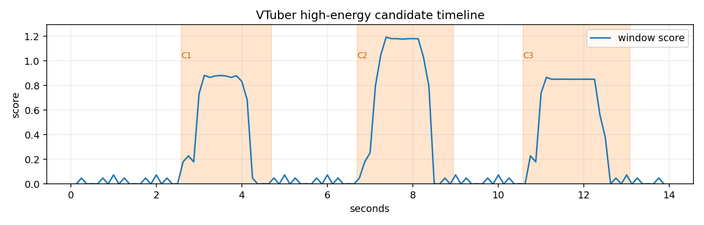

输入视频：D:/.c_projects/adc/ctcp/generated_projects/vtuber_highlight_local_mvp/demo_assets/sample_vtuber_replay.mp4
模式：rule_based_audio_plus_keywords 时长：14.00s 候选数：3

| # | 开始 | 结束 | 时长 | 分数 | 理由 | 关键词/文本 | 导出 clip |
|---|---|---|---|---|---|---|---|
| 1 | 2.58 | 4.70 | 2.12 | 88.2 | 音量突增 峰值明显 关键词增强 |
笑崩了，直接怪叫 | clips/clip_01_2.58_4.70.mp4 |
| 2 | 6.70 | 8.95 | 2.25 | 100.0 | 音量突增 峰值明显 高频尖锐反应 关键词增强 |
这段是鬼叫级反应 | clips/clip_02_6.70_8.95.mp4 |
| 3 | 10.57 | 13.07 | 2.50 | 86.7 | 音量突增 峰值明显 关键词增强 |
高能收尾 | clips/clip_03_10.57_13.07.mp4 |